왜 판수인가
스프린트 목표 8판은 현재 NRU가 하루에 걸쳐 치는 판수와 같은 양임. 이를 25분 창에 압축하는 장치 = 성공 시 그날 판수가 사실상 2배 이상 뛰는 구조임. 실패해도 몰수 없음이라 다운사이드 없음. 이 스펙은 마스터 기획서(2층 구조)의 레이어2 스프린트 실행본이며, 특히 발동 시퀀스(체스트 발견→열쇠 강탈→도주→마킹→행잉태그)를 원본 프레임별로 확정함.
레퍼런스 시퀀스는 간소화하여 이식. 완전히 똑같은 연출 재현 아님. 필수 뼈대 = ①발견 ②열쇠 강탈 ③도주 ④밧줄 태그 4개뿐. 연출 밀도는 리소스에 맞게 대폭 축소 가능. 스플래시·파티클·루나 도주 경로 등 세부 연출은 아트 재량.
2층 구조 요약
| 구분 | 레이어1 · 여정 트랙 | 레이어2 · 루나의 추격 (본 스펙) |
|---|---|---|
| 지속 | 상시 (이벤트 2일 내내) | 단발 창 (하루 1~2회, 회당 25분) |
| 진행 통화 | 별 (판 클리어 1판 = 별 +1) | 판수 카운터 (창 안 클리어 판수) |
| 목표 | 6마일스톤 · 스프린트 사이클 누적 (사이클 성공 = 진척 +1) 시트 반영 | 25분 안 8판 → 열쇠 → 루나 체스트 |
| 보상 | 마일스톤 해머 중심 · 6마일스톤 완주 → Jackpot 체스트 해금 시트 반영 | Normal 체스트(해머×3+와일드/undo×2+골드500) / Jackpot(해머×6+도시데코 조각×1+골드1,000) 시트 반영 |
| 실패 | 체스트만 무보상 · 슬롯 소멸 · 12h 쿨다운 시트 반영 | 몰수 없음 · 체스트(열쇠)만 미획득 |
| KPI | 완주율 · D1/D2 리텐션 | 판수/유저-일 폭발 · 세션 몰입 |
1-1 발동 시퀀스 — 7단계 (원본 프레임별 실측)
원본 CCS "Catch the Troll"의 발동 흐름을 GIF·스크린샷 6장으로 프레임별 실측함. 각 단계는 원본 서술 → 우리 이식안 병기. 핵심 심리 = 보상을 먼저 '내 것'으로 보여주고(소유 효과) → 뺏기고 → 되찾으러 뛰게(손실회피). 슬롯 열림 + 로비 진입 시 자동 발동, 시퀀스 종료 시점부터 25분 타이머 시작. 에스더 확정


① 체스트 발견
이벤트 시작 시 로비 풀스크린: "Congratulations! You found a Legendary Chest" + Chest rewards 패널에 코인 7,850 + 부스터 6종을 전부 미리 공개(원본 서술 · 우리 미채택) + "Tap to Collect".
심리: 보상을 먼저 '내 것'으로 보여줌 = 소유 효과.
연출 입력 잠금: 풀스크린 터치 가드 — 최초 1회 필수 시청 후 [Ok] 노출. 재노출부터 탭 스킵 허용.

② 열쇠 강탈 (Grab)
화면 밖에서 핑크 젤리 촉수가 들어와 체스트의 황금 열쇠를 낚아챔. 핑크 스플래시 연출. (보상 패널은 계속 노출)

③ 스토리 팝업
트롤 아이콘 + "Oh no! Bubblegum Troll stole the chest key. Quick, we have to catch him!" + [Ok]. 보상 패널은 계속 노출된 채 = 잃을 것을 보며 읽음.

④ 도주 (Escape)
[Ok] 후 로비 복귀. 트롤이 열쇠를 들고 메타 맵을 가로질러 날아 도망, 핑크 젤리 자국을 남김. 도주 경로의 종착 = 플레이(레벨) 버튼.

⑤ 플레이 버튼 마킹
트롤이 플레이 버튼(LEVEL)에 젤리를 묻히고 사라짐 → 이벤트 진행중 상시 표시가 플레이 버튼 자체에 생김. 입장 동선에 직접 마킹 = 다음 행동 유도.

⑥ 프리레벨 밧줄 태그
프리레벨 팝업 우측 밧줄에 체스트 + 남은시간(26m 15s) + 진행바 "Get the key after 8 levels" 행잉 태그.
원본 배수 참고: 이 GIF 회차는 "×8 rewards" 배수 표시(원본 서술 · 우리 미채택). 우리는 배수(×N) 비채택 — 티어 차이 = 체스트 보상 내용만(Normal vs Jackpot)으로 구분. 에스더 확정
원본 → 루나 이식 대응표
| 단계 | 원본 (Catch the Troll) | 루나 이식 (루나 본인 추격) | 재활용 여부 |
|---|---|---|---|
| ① 발견 | Legendary Chest 풀스크린 + 보상 7,850골드+6종 공개 | 루나 체스트 풀스크린 + 우리 보상 공개 (Normal 해머×3+와일드/undo×2+골드500 / Jackpot 해머×6+데코조각+골드1,000) | 신규 연출 |
| ② 열쇠 강탈 | 핑크 젤리 촉수가 열쇠 낚아챔 + 스플래시 | 루나가 직접 열쇠를 낚아채 물고 도망 준비 (달빛/보라 스플래시) | 리스킨 |
| ③ 스토리 | 트롤 아이콘 + 도난 대사 + [Ok] | 루나 아이콘 + "루나가 열쇠를 물고 도망쳤어요" + [확인] (InfoPopup 문법 · [참가] 버튼 없음) | 카피 리스킨 |
| ④ 도주 | 트롤이 맵 가로질러 날아 도망 + 젤리 자국 | 루나가 열쇠 물고 로비 메타 맵 도주 + 발자국/달빛 자국 → 플레이 버튼 종착 | 리스킨 |
| ⑤ 마킹 | 플레이 버튼에 젤리 묻힘 (상시 표시) | 플레이 버튼에 루나 발자국/달빛 마킹 (상시 표시) | 리스킨 |
| ⑥ 행잉 태그 | 프리레벨 밧줄: 체스트+타이머+진행바 (원본 ×8 배수 배지 표시) | 기존 진행이벤트 밧줄 문법 재활용 — 체스트+타이머+진행바. 배수 배지 미채택. 우리 보상 표기 (Normal/Jackpot 체스트 내용) | 기존 UI 재활용 |
| (연출 훅) | PreLevel.Message2Key "열쇠 후 획득" | 5판째 "🔑 열쇠 획득!" 앵커 마이크로 축하 (보상 분리 없음) | 신규(연출만) |
| ⑦ 지급 | 결과 화면에 묶어 지급 (원본 7,850골드+6종 · 별도 팝업 없음) | 결과 화면 + "🐱 루나의 추격" 뱃지 특별 표시 (Normal 해머×3+와일드/undo×2+골드500 / Jackpot 해머×6+데코조각+골드1,000) | 신규 제안 |
APK 5상태 → 아트/클라 매핑
APK 언팩 결과 발동 관련 연출 프리팹은 5상태(+미니 위젯). 한글 직관명(영문 병기)으로 전면 교체. 아트·클라 연출 대응:
| 상태명 (한글) | 상태명 (영문) | 원본 프리팹 | 발동 시점 | 루나 대응 연출 |
|---|---|---|---|---|
| 열쇠 강탈 | Grab | pre_CatchTheTroll_Grab / anim_CtT_TrollHand_Grab | 루나가 열쇠 낚아채는 순간 (flow-02) | 루나가 열쇠 낚아채 물고 준비 · 손실회피 진입 · 입력 잠금 |
| 도주 | Escape | pre_CatchTheTroll_Escape / VFX_Troll_Escape_Splash | 루나 로비 도주 (flow-04) | 루나 메타 맵 도주 + 발자국 자국 + 플레이 버튼 종착 · 입력 잠금 |
| 포획 성공 | Win | pre_CatchTheTroll_Win / VFX_Troll_Win | 8판 완주 성공 | 체스트 오픈 성공 연출 (S13) |
| 시간 초과 | Lose | pre_CatchTheTroll_Lose / VFX_Troll_Lose | 25분 만료 실패 | 루나가 열쇠 갖고 사라짐 · "시간 종료… 루나가 달아났어요. 다음 기회에 꼭 잡아요" · 몰수 없음 안내 (S14) |
| 미니 위젯 | Small | pre_CatchTheTroll_Small | 진행 중 상시 위젯/미니 상태 | 플레이 버튼 마킹 · 밧줄 태그 (flow-05·06) |
3-1 밸런스 파라미터 시트 반영
모든 수치는 초안이며 판당 소요 실측 후 확정. SSOT = 라이브 시트([PST] 밸런스시트) 형식의 이벤트 전용 탭 event_luna_sprint (2026-07-24 확정).
| 파라미터 | 확정 값 | 비고 |
|---|---|---|
| 스프린트 시간창 | 25분 (1,500초) | 판당 평균 소요 실측 후 조정 |
| 완주 판수 | 8판 | 25분÷판당 ≈ 촘촘하되 달성가능 |
| 티어 차이 | 체스트 보상 내용만 (Normal vs Jackpot) 에스더 확정 | 배수(×N) 미채택 — 선택형 베팅 시스템과 분리 |
| 회당 골드 캡 | 500 (Normal) / 1,000 (Jackpot) · 일 2,000 하드캡 시트 반영 | 골드 인플레 방어. 골드에만 적용 |
| 발동 빈도 | 데일리 2슬롯 (점심 12:00·저녁 19:00) · 슬롯 쿨다운 12h 에스더 확정 | 슬롯 자동 만료 — 미참여 시 소멸 후 다음 슬롯 대기 |
| 활성화 방식 | 슬롯 열림 + 로비 진입 시 자동 발동 · 시퀀스 종료 시점부터 25분 타이머 시작 에스더 확정 | [참가] 버튼 없음. InfoPopup = [Ok]뿐. 원본 접속 시 발견→강탈→도주 시퀀스 자동 재생 프레임 재검증 반영 |
| 열쇠 앵커 판수 | 5판째 | 연출 전용 플래그 · 보상 분리 없음 |
| 언락 조건 | 레벨 10 도달 (unlock 탭 50031 · condition_type=level_clear · 최초 튜토) 에스더 확정 | 미달 유저에게 이벤트 노출 없음. tutorial_guide 230034 (unlock_key=50031) 연동 |
| Normal 체스트 | 해머×3 + 와일드/undo×2 + 골드 500 시트 반영 | v1 기본 활성 |
| Jackpot 체스트 | 해머×6 + 도시데코 조각×1 + 골드 1,000 시트 반영 | 해금 조건 = 저니 6마일스톤 완주 (in_use TRUE) |
| 해머 상한 | 6/일 (3×2슬롯) · 성공률 30% 가정 실효 ~1.8해머/유저-일 시트 반영 | OnFire 요일 격리 · 상시 이벤트 해머 주간상한 ×1.3 공유 |
| 온보딩 | 첫 참여 목표 4~5판 완화 A/B (초안) 시트 반영 | Later 범위. MVP에서는 기본 8판 |
CatchTheTrollSettings.asset은 Unity 에셋번들 바이너리+IL2CPP 난독화라 복원 불가). 상세 = 마스터 §8 각주 / luna_chase_apk_findings.md §4.
3-2 연출 상태 5종 (상태 머신)
한글 직관명 전면 사용. 영문은 APK 프리팹 코드 참조용 병기.
| 상태 (한글) | 상태 (영문) | 진입 조건 | 다음 상태 |
|---|---|---|---|
| 열쇠 강탈 | Grab | 슬롯 열림 + 로비 진입 시 자동 발동 · 체스트 발견 후 루나 열쇠 강탈 연출 · 입력 잠금 | 연출 종료 → 도주(Escape) |
| 도주 | Escape | 스토리 [확인] 후 로비 복귀 · 루나 도주 연출 · 입력 잠금 · 시퀀스 종료 시점부터 25분 타이머 시작 | 플레이 버튼 마킹 → 미니 위젯(Small) 진행중 |
| 미니 위젯 | Small | 스프린트 RUNNING · 위젯/밧줄 태그 상시 표시 | 8판 완주 → 포획 성공(Win) / 25분 만료 → 시간 초과(Lose) |
| 포획 성공 | Win | 시간창 내 8판 완주 (열쇠 획득) | 체스트 오픈 → 지급 후 IDLE |
| 시간 초과 | Lose | 25분 만료 미완주 (또는 이벤트 종료 강제만료) | 몰수 없음 안내 "시간 종료… 루나가 달아났어요. 다음 기회에 꼭 잡아요" → IDLE |
3-3 계측 이벤트 (7xxx 계열)
기존 관례 = 4자리 코드 + data 필드(예 2100_GAMEPLAY_START). 스프린트 발동/완주/만료·체스트·앵커 각각 발화 시점 명시.
| 이벤트코드 | 발화 시점 | data 필드 (핵심) |
|---|---|---|
7100_LUNA_SPRINT_TRIGGER | 스프린트 창 발동 (NOTIFY) | sprint_id, slot_idx, trigger_type, window_sec(1500), target_clear(8) |
7101_LUNA_SPRINT_ENTER | RUNNING 진입 (첫 판 시작) | sprint_id, remain_sec |
7110_LUNA_SPRINT_CLEAR_STEP | 창 내 1판 클리어 (카운트 증가) | sprint_id, clear_count(n/8), remain_sec, gold_paid, gold_capped(bool) |
7115_LUNA_SPRINT_KEY_ANCHOR | 열쇠 앵커 도달 (초안 5판째 "🔑 열쇠 획득!") | sprint_id, anchor_level(5), elapsed_sec, remain_sec |
7120_LUNA_SPRINT_COMPLETE | 8판 완주 → 열쇠 획득 | sprint_id, elapsed_sec, key_granted(1) |
7121_LUNA_SPRINT_EXPIRE | 25분 만료 (또는 이벤트 종료 강제만료) | sprint_id, clear_count, reason(timeout/event_end), fail_type(lose/escape) |
7130_LUNA_CHEST_OPEN | 루나 체스트 오픈·지급 | sprint_id, hammer, gold, booster_list[], gold_in_cap(bool) |
7100/7101로 참여율, 7101→7120로 완주율(성공률 30% 검증), 7110의 gold_capped로 골드 캡 발동 빈도, 7115의 elapsed_sec로 앵커 위치 실측 조정, 7121의 fail_type으로 만료 실패를 timeout vs escape 분해. BQ 이벤트명 매핑 에스더 확정: troll_activate(7101 · 구 troll_join에서 개칭 — 자동 발동 전환 반영) / troll_cycle_clear(7120) / troll_cycle_fail(7121) / chest_opened(7130) / hammer_granted(7130 내 해머 지급). 창 내 완료판 상승폭·데코 진입률·D1/D3도 추적. 트랙 계열(7000~7031·7200)은 마스터 §9 참조.
3-4 데이터 테이블 요약
SSOT = 라이브 시트([PST] 밸런스시트) 형식의 이벤트 전용 탭 (2026-07-24 확정). 공용 탭 등록 2건 + 전용 탭 3개 신설. 전체 스키마·컬럼 정의는 마스터 §8 참조. 라이브 포맷 준수: 1행=한글 라벨 · 2행=영문 컬럼명 · in_use=TRUE/FALSE 문자열 · snake_case.
구성 변경(에스더 확정): 공용 4탭 + 전용 2탭. event_luna_chest 탭 폐기 → 체스트 보상 컬럼을 event_luna_sprint에 통합. 저니 스케줄 행 삭제(event_schedule 1행만 = 스프린트). tutorial_guide 230034 신규 등록.
| 구분 | 탭명 | 대역/키 | 내용 |
|---|---|---|---|
| 공용 등록 | event_schedule | 160006 | 추격 스프린트 1행 (점심 12:00·저녁 19:00 슬롯 명시 · 저니 트랙 행 삭제) 에스더 확정 |
| 공용 등록 | string_code | T_ 카피 키 | 루나 화자 카피 키 추가(T_ 대문자 관례·Jackpot 쌍 예약) |
| 공용 등록 | unlock | 50031 | 레벨 10 도달 언락 조건 (condition_type=level_clear · 최초 튜토) 에스더 확정 |
| 공용 등록 | tutorial_guide | 230034 | unlock_key=50031 · show_tutorial 소관 (이 탭 담당) 에스더 확정 |
| 전용 탭 | event_luna_milestone | 200101~200106 | 저니 트랙 6행 (goal_type=complete_sprint_cycle · 6회차 unlock_jackpot_chest) 시트 반영 |
| 전용 탭 | event_luna_sprint | 200201 | 스프린트 파라미터 1행 (컬럼식) — 체스트 보상 컬럼 통합(normal_hammer/gold/booster·jackpot_hammer/gold/deco). multiplier 컬럼 미포함. 에스더 확정 |
| key_number | type | start_day | end_day | slot_1_hour | slot_2_hour | repeat | in_use | interval_week | description |
|---|---|---|---|---|---|---|---|---|---|
| 160006 | luna_chase_sprint | 6 | 0 | 12 | 19 | TRUE | TRUE | 2 | 루나 추격 스프린트: 주말 2슬롯(점심 12:00·저녁 19:00) · 발동 파라미터 = event_luna_sprint 소유 |
| key_number | event_id | step | goal_type | goal_amount | reward_type | reward_key | reward_amount | unlock_jackpot_chest | in_use |
|---|---|---|---|---|---|---|---|---|---|
| 200101 | 160005 | 1 | complete_sprint_cycle | 1 | item | currency_hammer | 2 | FALSE | TRUE |
| 200102 | 160005 | 2 | complete_sprint_cycle | 2 | item | currency_gold | 400 | FALSE | TRUE |
| 200103 | 160005 | 3 | complete_sprint_cycle | 3 | item | currency_hammer | 3 | FALSE | TRUE |
| 200104 | 160005 | 4 | complete_sprint_cycle | 4 | item | booster_undo | 2 | FALSE | TRUE |
| 200105 | 160005 | 5 | complete_sprint_cycle | 5 | item | currency_hammer | 5 | FALSE | TRUE |
| 200106 | 160005 | 6 | complete_sprint_cycle | 6 | item | currency_gold | 800 | TRUE | TRUE |
| key_number | event_id | window_sec | target_levels | key_anchor_level | gold_cap_normal | gold_cap_jackpot | gold_cap_daily | cooldown_sec | daily_trigger_count | normal_hammer | normal_gold | normal_booster_wild | normal_booster_undo | jackpot_hammer | jackpot_gold | jackpot_deco | onboarding_target_levels | jackpot_unlock | in_use |
|---|---|---|---|---|---|---|---|---|---|---|---|---|---|---|---|---|---|---|---|
| 200201 | 160006 | 1500 | 8 | 5 | 500 | 1000 | 2000 | 43200 | 2 | 3 | 500 | 1 | 1 | 6 | 1000 | 1 | (A/B 초안) | journey_complete | TRUE |
3-5 시트 정정 제안 목록 (시트 E → 에스더 되반영 요청)
- unlock 탭 key 대역: 50110 → 50031 (라이브 대역 정합)
- event_luna_sprint key: 170001 → 200201 (event_ranking 대역 충돌 회피)
- multiplier 컬럼 삭제: multiplier_normal/jackpot 컬럼 미채택 → event_luna_sprint에서 제거
- [참가] 버튼 → 자동 발동: 활성화 방식 란 "수동 참가([참가] 탭)" → "슬롯 열림+로비 진입 시 자동 발동" 으로 수정
- event_luna_chest 탭 폐기: 체스트 보상 컬럼 event_luna_sprint에 통합 → 전용 탭 3→2개
- tutorial_guide 230034 신규 행 추가: unlock_key=50031, show_tutorial 소관
스프린트 레이어 신규 화면 5종 요약. 전체 명세 = 마스터 §6 (S10~S14).
| 화면 | 내용 | 발동 시퀀스 대응 |
|---|---|---|
| S10 스프린트 발동 알림 | 체스트 발견 → 열쇠 강탈(Grab) → 스토리 → 도주(Escape) → 플레이 버튼 마킹 풀시퀀스. 자동 발동 · 입력 잠금 최초 1회 필수 시청 | flow-01~05 |
| S11 스프린트 프리레벨 패널 | 밧줄 행잉 태그: 체스트+남은시간+"8판 완주 시 열쇠" 진행바. 우리 보상 표기(Normal/Jackpot 체스트 내용). 배수 배지 미표시 | flow-06 |
| S12 인게임 스프린트 HUD | 카운트다운 타이머 + 판수 카운터(n/8) + 추격 진행바. 5판째 "🔑 열쇠 획득!" 앵커 축하 | 연출 훅 |
| S13 완주 체스트 오픈 | 포획 성공(Win) 연출 → 루나 체스트 오픈 → 내용물 지급 (원본→우리: 7,850골드+6종 → Normal 해머×3+와일드/undo×2+골드500 / Jackpot 해머×6+데코조각+골드1,000) | 포획 성공(Win) |
| S14 스프린트 종료 (미완주) | 시간 초과(Lose) 연출 → 루나가 열쇠 갖고 사라짐 · "시간 종료… 루나가 달아났어요. 다음 기회에 꼭 잡아요" · 몰수 없음 안내 · 재도전 유도 | 시간 초과(Lose) |
🎨 화면별 무드 레퍼런스 (핀터레스트 · 캐주얼 UI)
각 와이어프레임의 톤·형태 참고용 무드 이미지. 그대로 복제 아님 — 색·형태 감만 잡는 용도(아트 재량). 출처=핀터레스트 공개 핀.
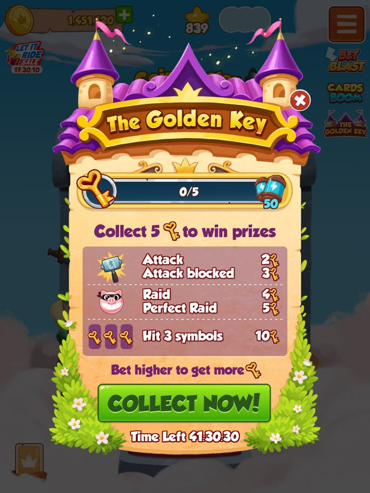
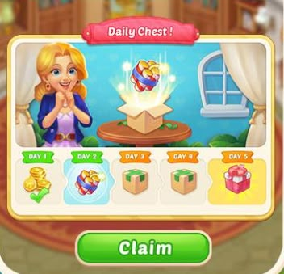
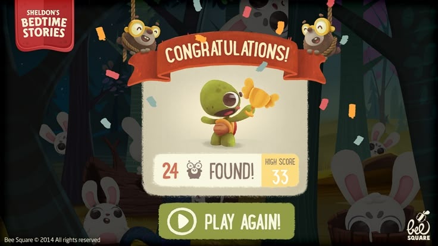
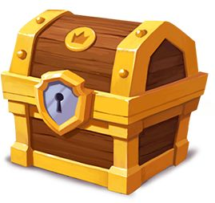
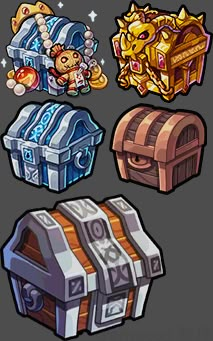
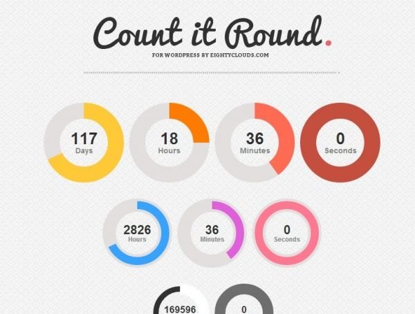
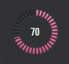
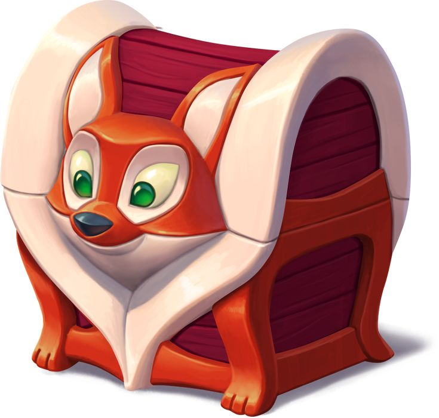
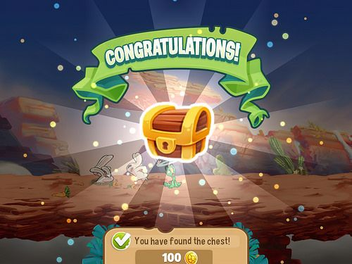
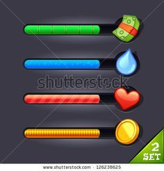
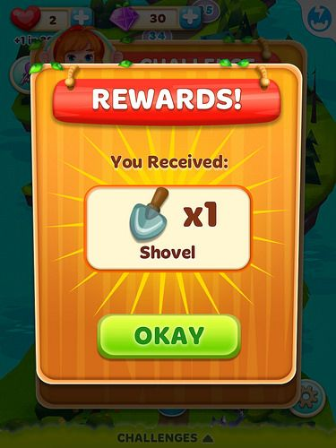
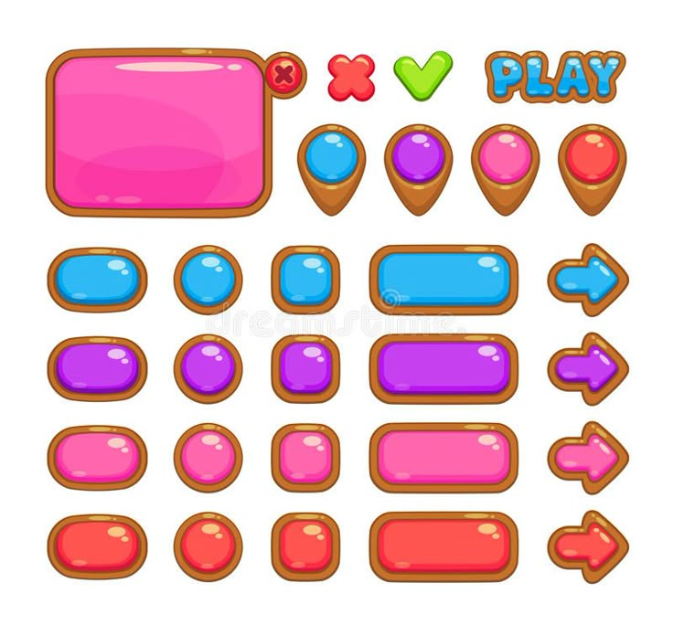
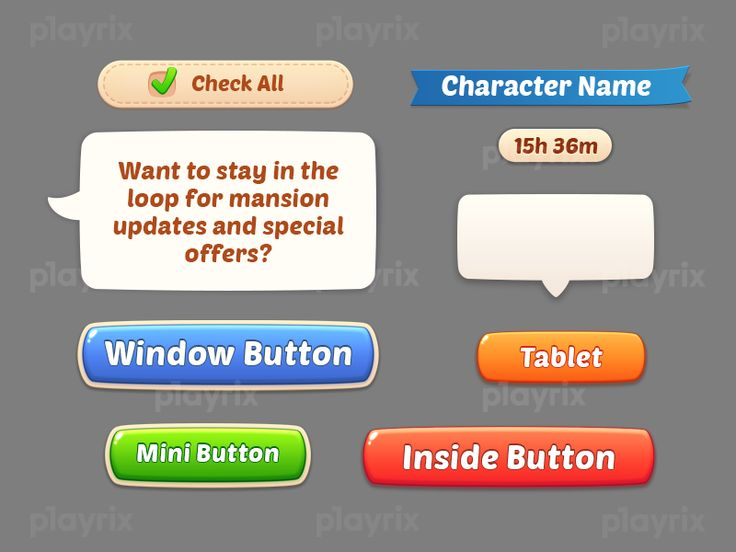
★ 신규 제안 — 결과화면 "루나의 추격" 뱃지
공수 (S/M/L · 스프린트 관련)
| 영역 | 항목 | 공수 |
|---|---|---|
| 클라 | 스프린트 UI(카운트다운·판수 카운터·추격 진행바·체스트) + 자동 발동 로직 + 연출 입력 잠금 | L |
| 클라 | 골드 캡 적용 로직 (배수 로직 불필요) | S |
| 서버 | 이벤트/스프린트 상태머신·스케줄러 (슬롯 배분·폴백·wall-clock 타이머 권위 · 자동 발동 트리거) | L |
| 계측 | 7xxx 로그 파이프라인 (기존 코드+data 관례 확장 · troll_activate 개칭 반영) | S |
| 기획 | 밸런스 파라미터·체스트 표 확정 (판당 소요 실측 선행) | M |
| 아트 | 루나 발동 시퀀스 연출(필수 뼈대 4개) · 루나 체스트 · 연출 리소스 재량 축소 가능 | M |
출시 순서
핵심 KPI 시트 반영
| KPI | 정의 | 목표(초안) |
|---|---|---|
| 판수 / 유저-일 | 완료판 ÷ 유저-일 (FB 퍼널 대시보드 SSOT) | 이벤트 주간 vs 직전 주간 +유의미 상승 (창 내 완료판 상승폭 분해) |
| 스프린트 참여율 | 슬롯 경험자(troll_cycle_start) ÷ 슬롯 노출자(7100) | 초안 목표 설정 후 관측 |
| 스프린트 완주율 | 완주(troll_cycle_clear) ÷ 진입 — 성공률 30% 검증 목표 | 25분 8판 난이도 검증 (너무 낮으면 완화) |
| 골드 캡 발동 | gold_capped(7110) 빈도 | 골드 인플레 감시 |
| 데코 진입률 | Jackpot 체스트 오픈(chest_opened) 중 deco_fragment_city 지급 비율 | 저니 완주 후 Jackpot 전환 추적 |
| D1/D3 | 이벤트 노출 코호트 리텐션 | 이벤트 주간 vs 직전 비교 |
오픈이슈 시트 반영
| # | 항목 | 상태 |
|---|---|---|
| ① | 8판 과부하 실측 — 25분 창 안에 8판 현실적 달성 여부 | 초안 — 판당 소요 실측 후 확정 |
| ② | Jackpot 게이팅 vs 즉시노출 — 저니 6마일스톤 vs 레벨 도달 조건 | 검토중 |
| ③ | OnFire 겹침 해머 정책 — OnFire 요일과 스프린트 슬롯 겹칠 때 해머 중복 처리 | OnFire 요일 격리 기정; 겹침 예외 정책 미정 |
| ④ | 저니 마일스톤 보상 수치 — 6행 골드·해머 최종값 | 초안 — v1 실측 후 확정 |
| ⑤ | 열쇠 앵커 위치 (초안 5판째) | 초안 — 7115 elapsed_sec 실측 후 조정 |
| ⑥ | 결과화면 "루나의 추격" 뱃지 디자인 | 제안 확정 · 아트 디테일 미정 |